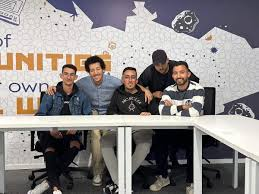
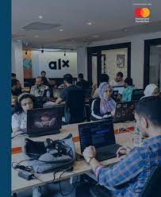

Becoming a Software Engineer: My Journey at Alx
Introduction:
Embarking on the journey of software engineering at Alx was more than just acquiring technical skills; it was an immersive experience that transformed me into a proficient software engineer. Throughout my time at Alx, I not only gained valuable knowledge but also forged lifelong friendships. Here, I recount my journey and share insights that may inspire others venturing into the world of software engineering.
1. Discovering the World of Software Engineering:
My journey began with a curiosity to understand the intricacies of software development. Through comprehensive courses and hands-on projects, I delved into the fundamentals of programming languages, algorithms, and data structures. Each lesson was a building block, laying the foundation for my future endeavors in the field.
2. Embracing Challenges and Growth:
As I progressed through my studies, I encountered challenges that tested my problem-solving abilities. Whether debugging complex code or tackling intricate algorithms, each obstacle presented an opportunity for growth. With the support of dedicated instructors and peers, I embraced these challenges, honing my skills and expanding my knowledge base.
3. Cultivating Creativity and Innovation:
Software engineering is not merely about writing code; it's about fostering creativity and innovation. At Alx, I had the freedom to explore innovative ideas and transform them into tangible solutions. From designing user-friendly interfaces to optimizing algorithms for efficiency, I learned to think critically and approach problems from diverse perspectives.
4. Building Meaningful Connections:
One of the most rewarding aspects of my journey at Alx was the opportunity to connect with like-minded individuals who shared a passion for technology. Collaborating on projects, engaging in lively discussions, and supporting each other through setbacks strengthened our bonds and enriched my learning experience. These friendships transcended the classroom, creating a supportive community that continues to inspire me.
5. Transitioning from Student to Software Engineer:
As I completed my studies at Alx, I realized that I had evolved from a novice programmer to a confident software engineer. Armed with technical expertise, problem-solving skills, and a thirst for knowledge, I embarked on the next chapter of my career with confidence and determination. Whether developing innovative software solutions or contributing to open-source projects, I am grateful for the solid foundation and invaluable experiences gained at Alx.
Conclusion:
My journey at Alx has been nothing short of transformative. From mastering technical skills to fostering creativity and building meaningful connections, every aspect of this experience has shaped me into the software engineer I am today. As I embark on new adventures in the ever-evolving world of technology, I carry with me the lessons learned and memories cherished from my time at Alx.